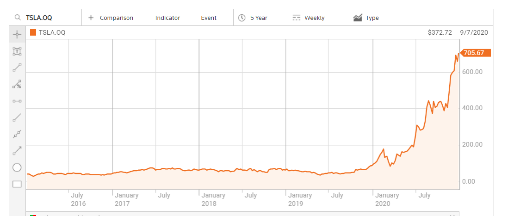

Smart Research: Volwassenheid Organisatie
Bij het onderwerp volwassenheid van de organisatie, heb ik ervoor gekozen om vier organisaties met elkaar te vergelijken. Twee van deze organisaties hebben bepaalde productieprocessen al SMART gemaakt. De twee anderen hebben dat (nog) niet. Op deze manier kan gekeken worden of een organisatie die al (deels) SMART is bepaalde voordelen heeft ten opzichte van een organisatie die nog niet SMART is.
Technologische bedrijven:
Tesla
Tesla is een Amerikaanse producent van elektrische auto’s en vrachtauto’s, zonnedaken en energieopslagsystemen. Daarnaast exploiteert het bedrijf een wereldwijd netwerk van verkooppunten om haar voertuigen aan de man ge brengen en een eigen netwerk van oplaadpunten. Tesla is een van de meest vooruitstrevende organisaties als het aankomt op het gebruik maken van de nieuwste technologische ontwikkelingen.
 (Reuters, z.d.)
Zoals te zien is heeft Tesla in 2020 een grote groei meegemaakt. Waar Tesla eerst als start-up werd beschouwd, doet het nu echt mee. In 2020 is er sprake geweest van een opschaling van de productie. Dit is bijzonder goed gelopen, waardoor de koerswaarde ook erg is gestegen (Willeme, 2021).
OCADO
De tweede organisatie die met technologische ontwikkelingen te maken heeft gehad, is OCADO. OCADO is een Britse online supermarkt, die zichzelf omschrijft als ’s werelds grootste toegewijde online supermarktketen. Het bedrijf heeft geen winkelketen en levert alle huisleveringen vanuit zijn magazijnen. Er is tevens een app, waarmee consumenten via die app boodschappen kunnen doen.
(Reuters, z.d.)
Hierboven ziet u de koersontwikkeling van OCADO (Reuters, z.d.). Zoals te zien is, is de koers vanaf 2018 erg gestegen na een technologiedeal met Groupe Casino. De stijging is zo groot, dat de waarde in een jaar is verviervoudigd. Ook is er te zien dat er een brand is geweest, maar ondanks die brand is de koers slechts licht gedaald. Dit komt doordat de organisatie door het gebruik van de technologie dingen snel weer op kon pakken, waardoor er weinig verlies is geleden met betrekking tot de koers.
Niet-technologische bedrijven:
Heineken
De eerste van de niet-technologische bedrijven is Heineken. Heineken is een Nederlands biermerk dat sinds 1873 wordt gebrouwen. Het wordt in veertig brouwerijen in 39 landen gebrouwen. Heineken is een organisatie waarbij er geen sprake is van SMART technologieën.
 (Reuters, z.d.)
(Reuters, z.d.)
Zoals te zien is schommelt de koers van Heineken geregeld. De laagste punten van de koers zijn in januari, waarna de koers weer stijgt voor een of twee jaar, waarna die weer daalt. Er is hier geen sprake van een technologische ontwikkeling en de schommelingen zijn constant. Het ene jaar is de koersindex hoger dan het andere jaar, maar dat is onafhankelijk van de technologie.
Unilever
De tweede organisatie die nog geen gebruik maakt van smart technologieën, is Unilever. Dit is een multinationale onderneming op het gebied van voedingsmiddelen, persoonlijke verzorging en schoonmaakartikelen.
(Reuters, z.d.)
In bovenstaande afbeelding is te zien dat de koers het over het algemeen erg gelijkmatig verloopt. Er zijn zo nu en dan pieken en dalen, maar er is nooit echt een uitschieter geweest. Dat het in 2020 wat minder ging, is naar mijn mening te wijten aan een overname van GlaxoSmithKline’s en de fusie van Unilever N.V. en Unilever PLC.
Financiële analyse
Om de financiële ontwikkelingen van een organisatie te bekijken, heb ik gebruik gemaakt van financiële ratio’s. Deze horen een afspiegeling te zijn van de financieel toekomstige positie van een organisatie. De ratio’s zeggen iets over de balansontwikkeling, de ontwikkeling van de kasstromen en de ontwikkeling van het resultaat. Tevens zijn de ratio’s representatief voor zowel de korte als de lange termijn (Huizing, 2016). De gegevens voor deze berekeningen zijn verkregen van de Balance Sheet van Reuters (z.d.)
Solvabiliteitsratio: Eigen Vermogen/Totale Activa
Deze ratio geeft de lange termijn ontwikkeling van het eigen vermogen. Het geeft antwoord op de vraag in hoeverre de organisatie aan haar lange termijn verplichtingen kan voldoen. De minimum norm ligt tussen 0,25 en 0,40. Dit houdt in dat als de waarde van de activa met 60% daalt, deze daling nog opgevangen kan worden.
- Tesla: (6.618/34.309)= 0,1929
- OCADO: (1.048,90/2.293,20) = 0,4574
- Heineken: (16.147/46.504) = 0,3472
- Unilever (66.528,35/103.677,52) = 0,6417
Current Ratio: Vlottende Activa/Vlottende Passiva
Deze ratio geeft aan in hoeverre de organisatie aan haar korte termijn verplichtingen kan voldoen. De uitkomst dient minimaal 1 te zijn, wil een organisatie aan die verplichtingen willen voldoen.
- Tesla: (12.103/10.667) = 1,1346
- OCADO: (1.009,20/459,30) = 2,1973
- Heineken: (8.419/12.307) = 0,6841
- Unilever: (71.458,87/34.808,08) = 2,0529
Debt Ratio: Vreemd Vermogen/Totaal Vermogen
Deze ratio geeft aan in welke mate de totale activa is gefinancieerd met vreemd vermogen.
- Tesla: (13.419/34.309) = 0,3911
- OCADO: (608,20/2.293,20) = 0,2652
- Heineken: (17.052/46.504) = 0,3667
- Unilever: (705,72/103.677,52) = 0,0068
Conclusie
Uit bovenstaande ratio’s kunnen volgende conclusies getrokken worden. Te beginnen met de solvabiliteitsratio. De enige die niet aan de norm voldoet, is Tesla. Deze organisatie heeft dus een te laag eigen vermogen in vergelijking met de totale activa en zou een eventuele daling lastig kunnen opvangen. De andere drie organisaties voldoen hier wel aan, met uitschieters bij OCADO en Unilever. Hierbij zit OCADO licht boven de norm, en Unilever erg boven de gestelde 0,40.
Bij de current ratio voldoet alleen Heineken niet aan de minimale hoogte van de uitkomst. Hierdoor zou de organisatie, zoals het door deze ratio wordt bepaald, niet aan de korte termijn verplichtingen kunnen voldoen. Haar vlottende activa is te laag ten opzichte van de vlottende passiva. De andere organisaties voldoen wel aan die gestelde norm. Hierbij zijn het tevens OCADO en Unilever die er bovenuit steken, met zelfs een score van 2. Zij hebben dus tweemaal zoveel vlottende activa dan vlottende passiva. Deze twee organisaties kunnen, tevens als Tesla, voldoen aan hun korte termijn verplichtingen.
Tot slot de debt ratio. Tesla en Heineken maken het meest gebruik van vreemd vermogen om hun totale activa te financieren. Een kleine 40% van hun totale activa wordt gefinancierd met vreemd vermogen, waardoor er ook schulden en rentes van leningen bij komen kijken. Deze twee worden gevolgd door OCADO, die ruim 25% van de activa financiert met vreemd vermogen. Tevens kunt u zien dat Unilever eigenlijk amper gebruik maakt van vreemd vermogen en het haalt de 1% niet eens. Deze organisatie heeft dus genoeg vermogen beschikbaar zodat ze niet hoeft te lenen.
Na het bekijken van de ratio’s kan het volgende geconcludeerd worden. Er is weinig verschil te vinden op financieel ratio vlak tussen de technologische en de niet-technologische bedrijven. Wel blijkt dat vooral OCADO en Unilever goed bezig zijn op financieel vlak. Wel had ik verwacht dat Tesla beter zou scoren. Deze organisatie heeft een te lage solvabiliteit, waarna ik verwachtte dat ze veel bij zou lenen. Echter valt hier de score ook nog mee, dus dit had ik niet verwacht. Tevens had ik niet verwacht dat Heineken een te lage current ratio zou hebben. In mijn ogen loopt deze organisatie erg goed en hoor je veel over dat merk, maar dit is dan weer een onverwachte score. Wat me positief verbaasde was het hele lage debt ratio van Unilever. Het is een grote organisatie en ik had verwacht dat die natuurlijk meer zouden moeten lenen. Dit is dus niet het geval.
Al met al zijn de verschillen onderling gering en kan er op basis van deze gegevens niet geconcludeerd worden dat een technologisch bedrijf veel beter of slechter is dan een niet-technologisch bedrijf.
Bibliografie
- Huizing, H., (2016). De 7 belangrijkste financiële ratio's bij een meerjarenbegroting.
- Reuters, (z.d.). OCADO Group PLC
- Willeme, (20210. Verkoopcijfers Tesla 2020 bizar positief
Ga terug naar 'Smart Start' Ga terug naar vorige pagina Ga naar volgende pagina